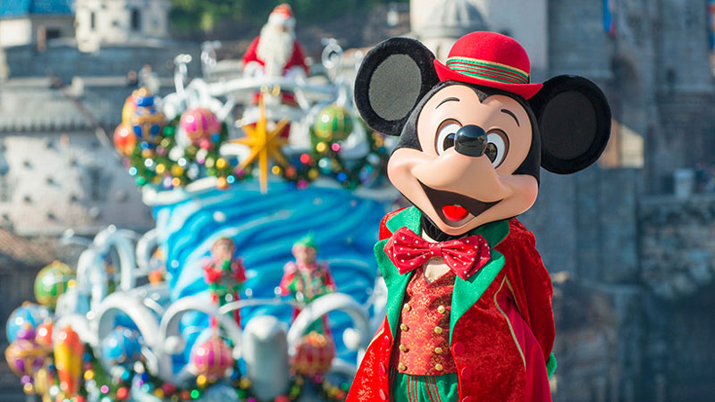
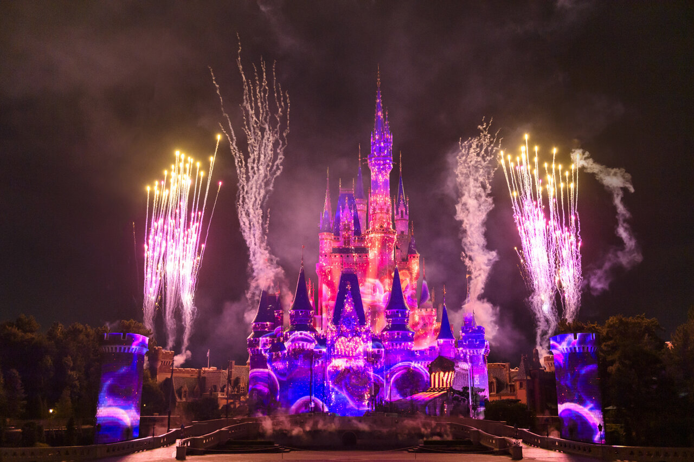

クリスマスの見どころ





当日の流れ
- 住吉を出発
京葉線で舞浜へ。カチューシャは現地で並ばずメルカリ調達済みのものを持参
- 舞浜着・ゲート前で開園待ち
朝イチ入園のために早めに並ぶ
- 入園 → アプリで3つ即実行
ショーのエントリー受付（マジカルミュージックワールド夕方回）／美女と野獣のDPA購入（夕方枠）／スタンバイパス確認
- ホーンテッドマンション “ホリデーナイトメアー”
クリスマス限定版。いちばん並ぶので朝イチが正解
- カントリーベア・シアター “ジングルベル・ジャンボリー”
クリスマス版のショー。ウエスタンランドをのんびり散策
- ワールドバザールのツリーで写真
巨大クリスマスツリーとデコレーション。お土産は夜の混雑を避けてアプリ購入も手
- ジョリーフード・プラザで軽く食べ歩き
シンデレラ城前に初登場のクリスマスフード集結エリア。ランチ本番は13:50のブルーバイユーなので軽めに
- 昼パレード「トイズ・ワンダラス・クリスマス！」
今年のクリスマスの主役。30分前から城前〜プラザで場所取り。有料DPA席もあり
- ブルーバイユー・レストランでランチ【予約済み】
PS確保済み（大人2名）。入口で予約名「クマノヤスユキ」で2名と伝える。支払いは現地で料理代のみ
- ハーモニー・イン・カラー or アトラクション
通常パレードも公演あり。プーさんのハニーハント等に振ってもOK
- ミッキーのマジカルミュージックワールド
エントリー当選想定。外れたらミッキーの家でミート・ミッキーへ
- 美女と野獣 “魔法のものがたり”（DPA）
日が落ちたファンタジーランドがいちばんきれいな時間
- エレクトリカルパレード・ドリームライツ
クリスマス期間限定バージョン。音楽もコスチュームもクリスマス仕様
- 花火「スターブライト・クリスマス」
クリスマスソングにのせた約5分の花火
- 閉園
おつかれさま。帰りは京葉線で住吉へ
リンク集
注意メモ
- 公演時刻はクリスマス期間の現在パターン。12/17分の正式時刻は12月上旬に公式アプリで確定
- ブルーバイユーは13:50で予約済み（大人2名、予約名クマノヤスユキ）。変更・取消は利用時間の60分前までオンラインで可
- DPA（美女と野獣）とショーのエントリーは入園直後にアプリで。後回しにすると枠が消える